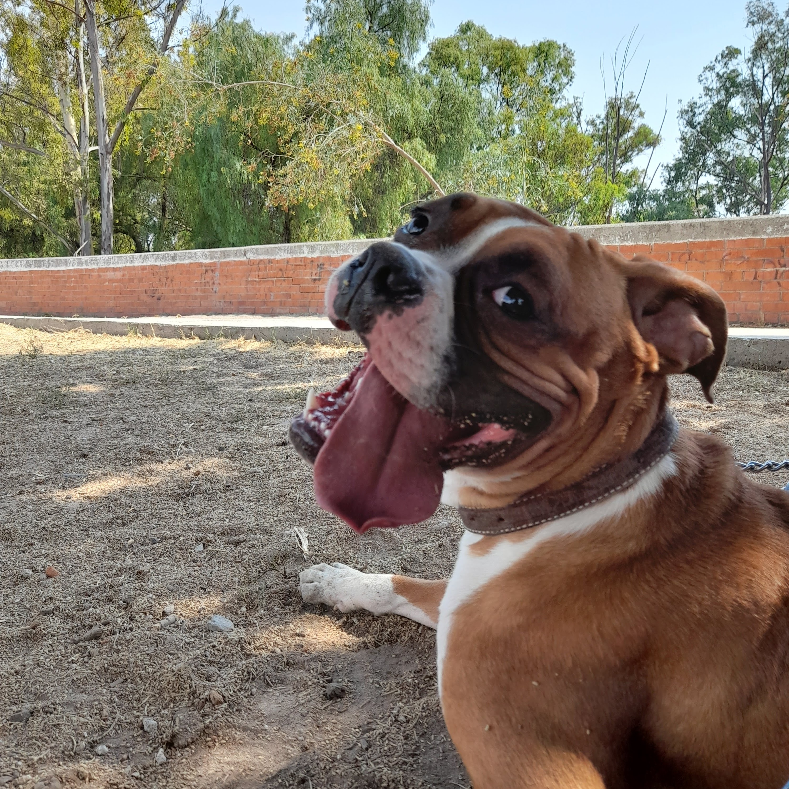
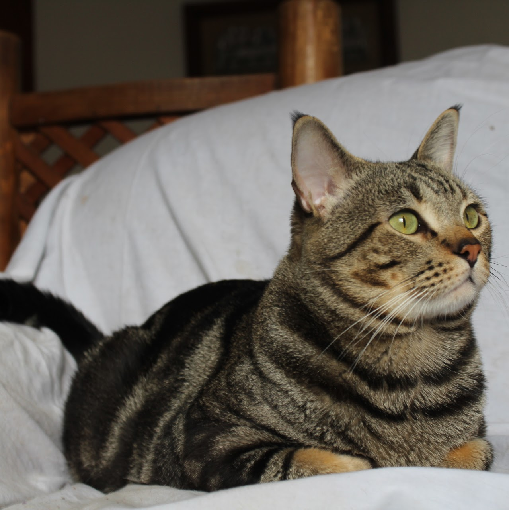
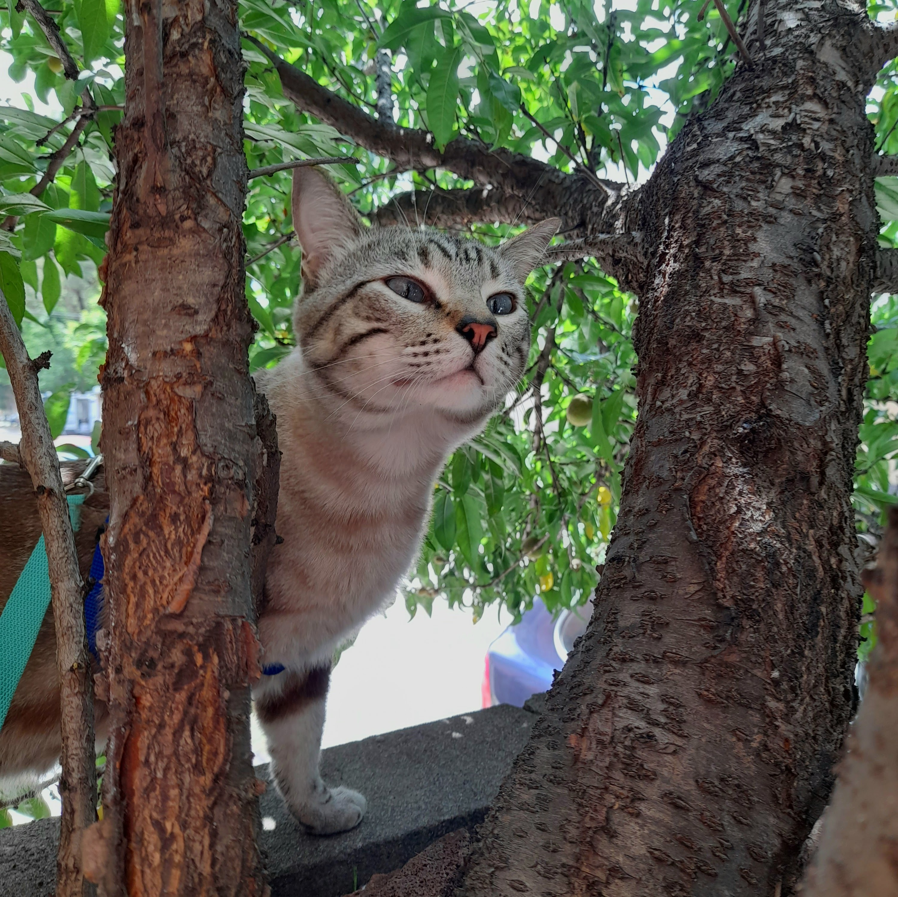

<html>
<style type="text/css">
    main nav ul li{
	width: 19.3%
}
<head>
    <title>Imágenes en html</title>
    <link rel="stylesheet" href="../css/style.page.css">
</head>
<body>
    <header>
        <h1>Imágenes</h1>
    </header>
<nav>
  <ul>
                <li><a href="../index.html">Inicio</a></li>
                <li><a href="../html/Listas.html">Listas</a></li>
                <li><a href="../html/enlaces.html">Enlaces</a></li>
                <li><a href="../html/tablas.html">Tablas</a></li>
                <li><a href="../html/imágenes.html">Imágenes</a></li>
                <li><a href="../html/audio.html">Audio</a></li>
                <li><a href="../html/videos.html">Video</a></li>
                <li><a href="../html/Formularios.html">Formularios</a></li>
            </ul>
    
    </nav>
    <main>
    <section>
        <h2 id="sección 1">Inserción de imagen</h2>
        <p>Hopper es un perro Boxer que siempre está lleno de energía y listo para la acción, desde que llegó a casa, ha sido un torbellino de actividad. Le encanta correr y jugar, especialmente cuando se trata de perseguir pelotas en el parque.</p> <p> Su pelaje corto y brillante lo hace lucir saludable, y siempre está dispuesto a hacer nuevas amistades caninas, a pesar de su tamaño, Hopper tiene un carácter amistoso y juguetón, lo que lo convierte en un compañero divertido. Disfruta de las caminatas diarias, donde explora todo lo que encuentra a su paso. Es un perro curioso y le encanta investigar nuevos olores y lugares. También tiene sus momentos de tranquilidad, cuando se acurruca en su cama o se queda dormido después de un día de juegos, es un perro enérgico y entretenido que siempre trae un poco de diversión a la rutina diaria.</p>
         <a href="#menu interno"></a>
    </section>
    <section>
        <h2 id="sección 2">Imagen flotante</h2>
        <p> Tengo dos gatos que aportan una gran dosis de alegría y diversión a mi hogar. El primero es Taro, un adorable gatito de ojos verdes y un pelaje rayado que combina tonos de café. Tien una personalidad tranquila y le gusta disfrutar de momentos de relajación. Suele encontrar los lugares más soleados de la casa para acurrucarse y tomar una siesta. Aunque tiene un temperamento más sereno, no se queda atrás cuando se trata de jugar, a veces, se une a las travesuras de Hiro, y juntos forman un dúo divertido que explora cada rincón. </p>
        
        <p>Por otro lado, está Hiro, un gatito de ojos azules y pelaje beige. Su personalidad juguetona lo convierte en el explorador de la casa, siempre en busca de nuevas aventuras. Taro es muy curioso y le encanta trepar por los muebles o esconderse en lugares inesperados. A menudo, lo atrapo jugando con cualquier objeto que encuentre, desde una bola de papel hasta un simple cordón.</p>
        
        <p> Taro y Hiro llegaron a mi vida el 21 de marzo de 2021, y desde entonces, han sido una parte fundamental de mi hogar. Estos dos gatitos, con personalidades tan diferentes, se complementan de manera perfecta. Juntos, han transformado mi hogar en un espacio vibrante y lleno de vida, haciéndome sonreír cada día con sus interacciones y travesuras.</p>
        <p>Taro y Hiro se llevan muy bien con Hopper,a pesar de las diferencias entre ellos, han formado un vínculo especial que hace que mi hogar sea aún más acogedor. Hopper, con su energía desbordante, juega suavemente con Hiro, mientras que Taro, más tranquilo, a menudo observa desde un lugar seguro. Sin embargo, también se une a la diversión de vez en cuando, cada uno con su personalidad única, interactúan y se complementan, creando un ambiente lleno de alegría.</p>
        <a href="#menu interno"></a>

    </section>
    <section>
        <h2 id="sección 3">Imagen animada</h2>
         <p>Mi animal favorito son los gatos. A lo largo de mi vida, he tenido todo tipo de mascotas, desde conejos hasta serpientes, cada una con su propio encanto. Sin embargo, con los gatos he creado un vínculo especial que va más allá de lo superficial, me encanta su personalidad independiente y curiosa, así como su capacidad para mostrar afecto de una manera sutil pero profunda. Los gatos tienen una forma única de conectarse con las personas, y esa mezcla de misterio y ternura me fascina. Cada uno tiene su propia manera de interactuar y, aunque pueden ser un poco distantes a veces, cuando deciden acercarse, es un momento que aprecio mucho. La relación que he formado con mis gatos es verdaderamente única y me llena de alegría cada día.</p>
        <a href="#menu interno"></a> 
    </section>
        <section id="fondo_section">
        <h2 id="sección_4">Imagen con Background</h2>
            <p id="texto">Mi gatito Spook era negro y estuvo conmigo durante ocho años. Fue una parte muy importante de mi vida, y su pérdida hace dos años dejó un vacío enorme. Lo amé profundamente, y no hay día en que no lo extrañe. </p>
            
            <p id="t2">Spook tenía una personalidad especial que lo hacía único; siempre encontraba formas de hacerme sonreír, ya fuera con sus travesuras o al acurrucarse conmigo en los momentos más tranquilos. Su compañía fue invaluable, y aunque ya no esté físicamente, sigue presente en mis recuerdos más preciados.</p>
            
            <p id="t3">Spook era un gato bastante antisocial con los demás, pero conmigo tenía una conexión especial. A pesar de su carácter reservado, siempre encontraba un momento para demostrarme su cariño, como si yo fuera la excepción a su indiferencia. Le encantaba jugar, especialmente persiguiendo juguetes o sombras, y tenía un instinto cazador muy marcado; disfrutaba acechando cualquier cosa que se moviera, desde insectos hasta los juguetes que le compraba. Aunque a veces parecía distante con los demás, conmigo era diferente, y eso hacía nuestra relación aún más significativa.</p>
            
            <p id="t4">Spook tenía sus gustos bien definidos, y su comida favorita era el pollito; cada vez que lo olía, se emocionaba de inmediato. Durante la pandemia, su compañía fue fundamental para mí. Estar juntos en casa todo ese tiempo hizo que nuestra conexión se fortaleciera aún más. Mientras el mundo parecía detenido, Spook siempre estaba ahí para hacerme compañía, ya fuera jugando, acurrucándose conmigo o simplemente estando cerca. Su presencia fue un gran consuelo en los momentos difíciles, y tenerlo a mi lado durante esa etapa fue algo invaluable.</p>
            <a href="#menu interno"></a> 
            
        </section>
        <section id="filtros_imagen">
        <h2>Filtros de imagen</h2>
            
             
             
             
             
             
             
             
             
            
            
         
        </section>
        <nav id="menu interno">
        <ul>
            <li><a href="#sección 1">Imagen</a></li>
            <li><a href="#sección 2">Flotante</a></li>
            <li><a href="#sección 3">Animada</a></li>
            <li><a href="#sección_4"> Background</a></li>
            <li><a href="#filtros_imagen">Filtros</a></li>
            </ul>
        </nav>
    </main>

    <footer> 
        <h5>Elaborado por María José García Machorro </h5>
    </footer>
</body>
</html>
